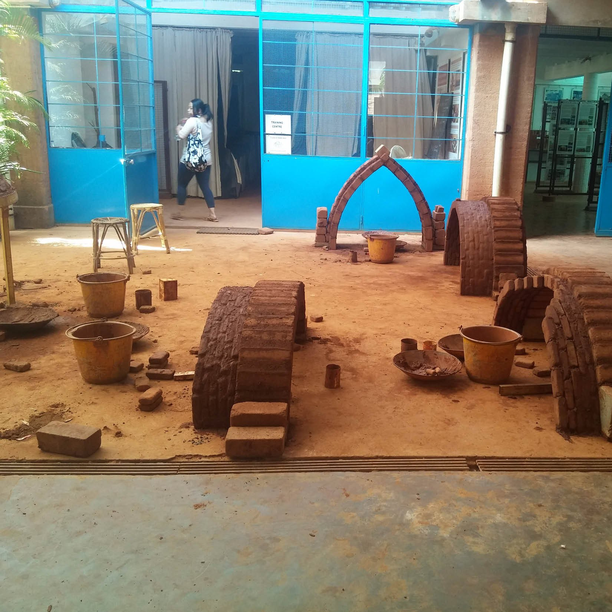

/ WORKSHOP — TRAINING
Auroville Earth
Building Training
A two-week earth-building course in Auroville, India — soil mechanics, arches, vaults and domes, and rammed-earth technique, learned inside one of the world’s most diverse intentional communities.

/ OVERVIEW
Soil, arches and a community built on unity.
In February 2016 I accompanied thirteen students to a two-week earth-building training course, going deeper into soil mechanics, arches, vaults and domes, and rammed-earth techniques — under the supervision of Dr. Nermine AbdelGalil and Architect Setpram Menai.
Staying in the Auroville community was an enlightening experience in itself. We learned about the ideal of human unity the township is built around, and visited a range of buildings made with earth and ferro-cement. The community is remarkably diverse — drawing people from more than 150 countries, of all faiths and beliefs.